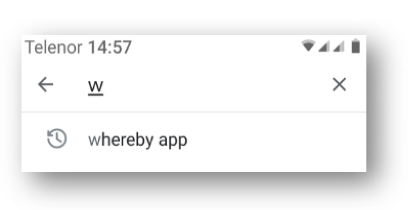
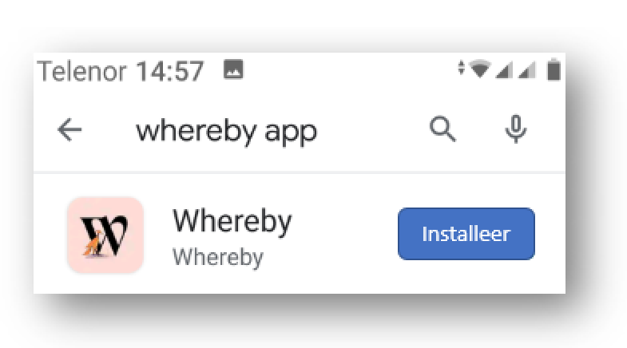

Hoe start je met Whereby (PC of mobiel)
PC (mac)
Voor de PC heb je nodig:
- PC (mac), laptop of desktop
- (ingebouwde) camera
- (ingebouwde) microfoon
- (ingebouwde) luidsprekers
- web browser, met Chrome ging het bij mij niet goed (kent camera en microfoon niet)
- internet
Wat te doen (zie video):
mobiel (android / iOS)
Alleem je mobiel en internet heb je nodig
Wat te doen (geen video, plug and pray)
- start app Google Playground / Apple iStore
- zoek whereby app (zie plaatje 1 (android))

- installeer whereby app (zie plaatje 2 (android))

- start whereby app
- ga naar https://whereby.com/bellemakers
- beetje doorklikken
- dan zou het moeten werken...